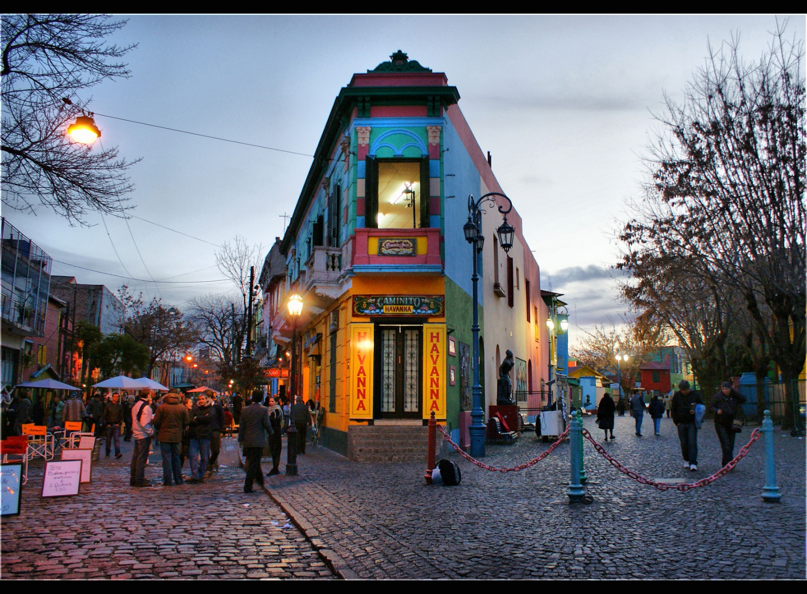

Diversidad Cultural en Buenos Aires
Buenos Aires es un mosaico cultural en el que convergen influencias de distintos rincones del mundo. Desde sus inicios, la ciudad ha sido un importante punto de recepción de migrantes europeos, principalmente italianos y españoles, que llegaron a Argentina a finales del siglo XIX y principios del XX en busca de nuevas oportunidades. Esta ola migratoria no solo transformó el paisaje urbano, con la construcción de edificios de estilo europeo, sino que también enriqueció la gastronomía y las costumbres locales, dando lugar a una identidad porteña que es tan diversa como vibrante.
Sin embargo, la diversidad cultural de Buenos Aires no se limita a las raíces europeas. La ciudad ha sido, y sigue siendo, un refugio para comunidades de distintos orígenes, incluyendo árabes, judíos, coreanos, bolivianos y paraguayos, quienes han dejado una huella significativa en barrios como Once, Flores y Villa Crespo. Estos sectores son verdaderos microcosmos en los que se puede encontrar desde sinagogas hasta mercados de productos asiáticos, pasando por festivales y celebraciones que mantienen vivas las tradiciones de sus lugares de origen.
Además, la vida cultural en Buenos Aires se manifiesta a través de una intensa agenda de actividades artísticas y eventos multiculturales. Festivales como el Buenos Aires Celebra, organizado por el gobierno de la ciudad, reúnen a distintas colectividades para compartir música, danzas, gastronomía y artesanías típicas. Esta celebración no solo refuerza el sentido de comunidad, sino que también permite a los visitantes y residentes conocer y apreciar la diversidad cultural que define a la capital argentina.
Por último, el arte urbano y las expresiones artísticas en los espacios públicos también reflejan la diversidad de voces presentes en Buenos Aires. Murales, grafitis y esculturas urbanas son testigos del mestizaje cultural que caracteriza a la ciudad, donde se combinan influencias indígenas, africanas, europeas y latinoamericanas. Así, Buenos Aires no solo es un destino turístico lleno de contrastes, sino un espacio donde las distintas identidades culturales se encuentran, conviven y crean nuevas expresiones artísticas.
